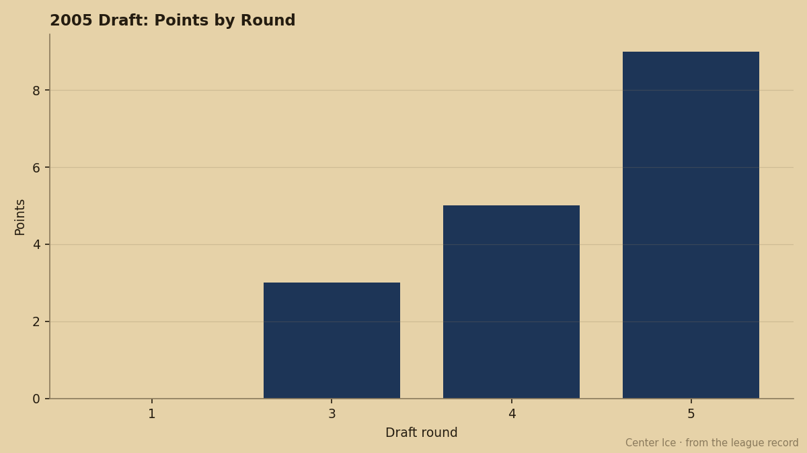
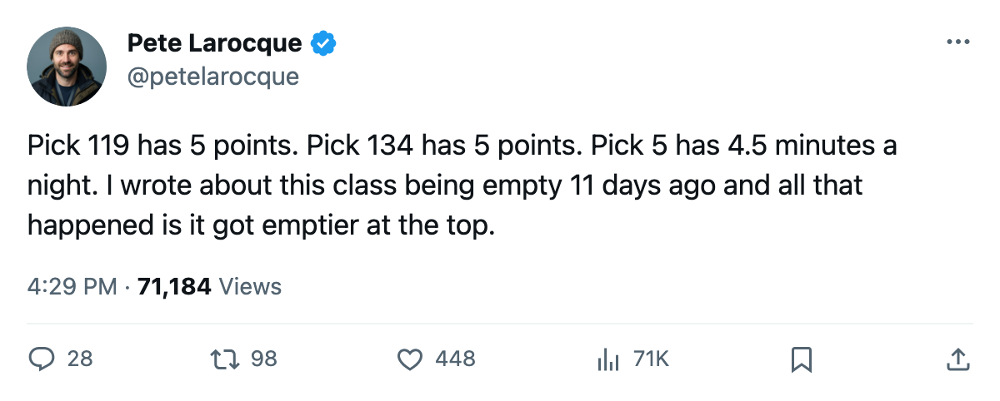
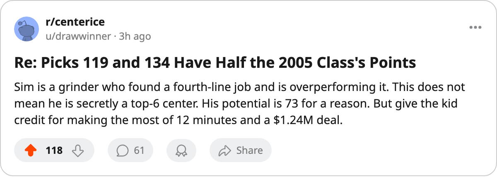

WSH
WSH ANA
ANAPicks 119 and 134 Have Half the 2005 Class's Points. The First Round Has None.
Josh Sim and Mika Tirkkonen own 10 of the class's 17 points. Tim Gardener and Boris Bunka, picks 5 and 18, have played 9 games between them and scored nothing.
 Pete LarocqueScouting editor · The Prospect File
Pete LarocqueScouting editor · The Prospect File
Josh Sim

The piece
The 2005 draft class has 17 points. Thirteen players from the June class have suited up. Two of them, taken in the fourth and fifth rounds, account for 10.
Josh Sim73 went 119th overall. He has 3 goals and 5 points in 6 games for  New Jersey Devils, averaging 12.8 minutes a night. Mika Tirkkonen75 went 134th. He has 5 points in 4 games for
New Jersey Devils, averaging 12.8 minutes a night. Mika Tirkkonen75 went 134th. He has 5 points in 4 games for  New York Islanders, averaging 13.5 minutes. Both carry a 0 on the Bureau's Development Index, which means their overall grades read at their base. Neither is in a hot streak. They are just playing.
New York Islanders, averaging 13.5 minutes. Both carry a 0 on the Bureau's Development Index, which means their overall grades read at their base. Neither is in a hot streak. They are just playing.

The first round has produced nothing. Tim Gardener75, taken 5th overall by  Toronto Maple Leafs, has 0 points in 6 games at 4.5 minutes a night. Boris Bunka71, 18th to
Toronto Maple Leafs, has 0 points in 6 games at 4.5 minutes a night. Boris Bunka71, 18th to  Detroit Red Wings, has 0 in 3 at 10.0 minutes. No other first-rounder has dressed. Nine games, 0 points.
Detroit Red Wings, has 0 in 3 at 10.0 minutes. No other first-rounder has dressed. Nine games, 0 points.
That gap is the story six weeks in. The back-end picks are getting real minutes from real teams and converting at a pace the top of the draft has not matched.
The contract that looks cheap
Sim's rookie deal pays him $1.24M with 3 years left. At 5 points in 6 games, he is running at a pace that will put him in double digits by February if he stays in the lineup. The Book has him at 75 overall, with a potential grade of 73. His strongest attributes are aggression at 85, checking at 81, endurance at 80 and puck handling at 79. Those are the numbers of a fourth-line center who has found a role and is executing it. The potential grade says the Bureau does not expect him to outgrow that role. He is 20.
Tirkkonen's numbers are similar in shape. 76 overall, 74 potential. 5 points in 4 games at 13.5 minutes. He is a 5th-rounder scoring at better than a point a game.
What the first round has
Gardener carries the class's best potential grade at 98. His 4.5 minutes a night in Toronto's lineup say the coaching staff has not found a place for him yet. The Senators took him 5th on the premise that the ceiling is high enough to wait out. Right now the ceiling is 4.5 minutes of ice and a healthy scratch most nights.
Bunka at 10.0 minutes in Detroit has the same problem in a different building. His potential sits at 51, the lowest in the first round among players who have dressed. The Red Wings drafted a defenseman they expected to be ready. He is not ready. The minutes tell you that.
| Round | Players played | Games | Points |
|---|---|---|---|
| 1 | 2 | 9 | 0 |
| 3 | 4 | 23 | 3 |
| 4 | 2 | 15 | 5 |
| 5 | 5 | 22 | 9 |
No second-rounders have played. The entire 30-man second round has 0 games on the board.
The class that nobody wanted is the class that shows up
When I wrote on October 18 that the first point came from pick 80, the class had 1 point total across 14 games. Eleven days later it has 17 points across 69 games. The shape has not changed. It has deepened.
Stéphane Laperriere69 at pick 80 has 1 in 6. Vladimir Kotalik74 at 73 has 1 in 6. Marco Klundt67 at 79 has 1 in 6. Jussi Vertala74 at 145 has 2 in 7. These are players in their second or third week of professional hockey, playing on teams that needed bodies and put them out there.
Sim told The Tunnel's reporter this week about the difference between being a prospect and being a player. He did not use those words. What he said was that the minutes come when you stop trying to prove something and start doing the job. A 20-year-old on a $1.24M rookie deal, talking like he already knows what the job is. His checking grade is 81. His aggression grade is 85. The Book already knows what he is. The only question is whether the 119th pick stays in the lineup long enough to make the 5th pick look silly.
What to watch
Gardener is the one to track. A 98 potential at 4.5 minutes a night is a usage problem. If Toronto gets him to 12 minutes by November, the point comes. If he is still at 4.5 in December, the grade is a fiction.
The rest of the first round is scratched and invisible. No other top-30 pick from June has put on a sweater. The class is 17 points deep and the top of the draft has scored zero of them.

